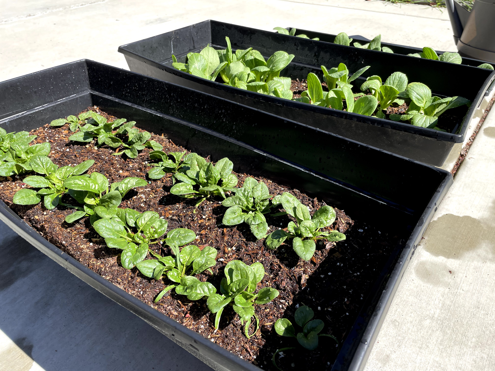

I’m Miranda, a recent graduate from UC Davis with a dual degree in Design and Business Economics.
I’m currently a product designer at OpenMeal, a non-profit organization, dedicated to serving meals to those in need while also supporting local restaurants! In the fall, I'll be joining the UX Design team at Workday as an Associate Product Designer! I'm so grateful for this opportunity and I'm excited to learn and grow in this new role.
Appreciate you taking the extra step to get to know me!*

It wasn't until I was trying to figure out where an unusual charge on my credit card came from that UX made itself known in my life. Though with great difficulty, I eventually surmounted the Wells Fargo app and found myself thinking about how it could be improved.
From then on, I read up on everything UX and started my first project: redesigning the Wells Fargo app. From collecting data to prototyping the micro-interactions of a swipe function, I loved being able to leverage real-world data and design tools that could shape everyday people’s lives. That principle still applies today. My goal, be it in design or otherwise, is to improve public life for everyday people and that's evident in the work I've done thus far. And what's even more energizing is being able to work on projects I truly care about and understanding experiences I might have never related to otherwise.When I'm not designing, I'm...
— üëö; thrifting with one of my best friends! — 🍰 whipping something sweet up with my KitchenAid (I love baking asian or asian-inspired desserts the most!) — 🌲 somewhere outdoors! — üíå; starting up my online art print shop!An accumulation of all the cool things I did with cool people this past year! (in and outside of design)
— Design Interactive Board 2020 — Design Interactive Cohort Fall 2020 — The Alexas (a band I'm in!) — My garden! As a Chinese-Filipino American, being asian is a very important part of my identity and upbringing. This year has been one of the hardest for asian americans, but we continue to brave this pandemic and the negative associations that came with it. Supporting the AAPI community is something I no longer want to do quietly and I hope you'll take the time to explore some of these resources I find useful and organizations I want to reinforce.
I would also like to dedicate this space to my Yin-Yin, Anita. ‚ù§Ô∏è Not a day goes by that I don't think of you and the goodness you brought to my life. The care you showed for others continues to encourage me today and reminds me that it's important, now more than ever, to support my local community. — Heart of Dinner üçö Heart of Dinner combats food insecurity and isolation within NYC‚Äôs elderly Asian American community. They deliver care packages of hot lunches and fresh produce every Wednesday, lovingly paired with a handwritten and illustrated letter in Chinese or Korean. If my grandparents were around today, I would have loved to see them receive something so thoughtful. — Chinese Food Club ü•° If you're looking for a bite to eat, consider supporting local Chinese restaurants in your area, they need it now more than ever. — OpenMeal üçú OpenMeal is a 501c3 aiding both vulnerable restaurants and people facing some degree of food insecurity. They bring business back to restaurants in need of customers and food to those that most need it through donated funds. Your contribution can hit two birds with one stone. — Asian Veggies ü•¨ Asian Veggies is an NYC Asian-owned small business that provides fresh produce to the beloved elderly Chinatown community. While it's unsafe for older asian folks to go out right now, Asian Veggies is an alternative source for getting these asian specialty products. — Welcome to Chinatown ü•¢ Welcome to Chinatown is a grassroots initiative to support Chinatown businesses and amplify community voices that generates much needed momentum to preserve one of New York City's most vibrant neighborhoods. They build relationships with small business owners and community members to ensure Chinatown is always open for business.